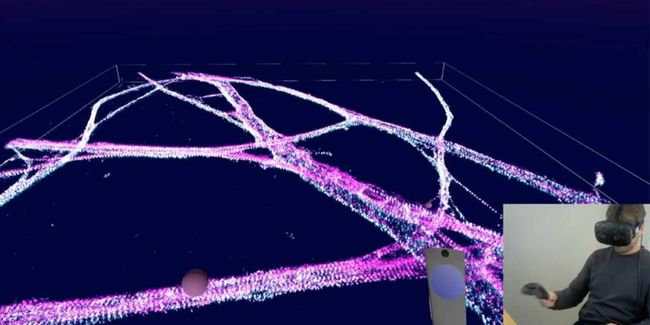
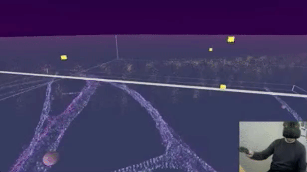

科技成果
>
“钻进”细胞，探寻病因！这款VR设备让科学家在你的身体漫步
“钻进”细胞，探寻病因！这款VR设备让科学家在你的身体漫步
2020-10-26 17:35 大数据文摘


物理学家Richard Feynman1959年在加州理工学院的 “微观世界有无限的空间 ”演讲中激励他的听众们去研发功能更加强大的显微镜，这样生物学家就可以探索肉眼不能见的“惊人的小世界”。他说，如果我们能“看见那些东西”，回答基本的生物学问题就会变得容易得多。
几年后，在科幻电影《奇幻之旅》（Fantastic Voyage）中，一个潜艇队员将自己缩小到微观尺寸，并进入人体执行修复大脑损伤的任务。1966年的电影预告片中说，这部电影 “把你所知道和理解的世界的界限下拉”，把观众送到了 “前无古人、后无来者的地方”。
现在，科学家们将本世纪中叶物理学家和电影制片人的愿景结合在一起，形成了一种时髦的虚拟现实体验。在上周发表在《自然医学》上的一篇论文中，研究人员描述了一款使科学家能够使用虚拟现实（VR）头盔进入细胞或其他生物结构内部并进行探索的新型软件。
这不是电脑生成的体验。超分辨显微镜拍下了这些活细胞的图像。然后，软件将显微镜中的二维数据转换为三维沉浸式可视化图像。这种新鲜的、近乎个人化的生物结构观察，可能让研究人员更好地了解细胞的内部运作，并寻找疾病的成因。
剑桥大学的生物物理化学家Steven Lee说：“我们正试图找到有趣的方法来‘看见这些东西’。”他是该论文的共同作者。Lee和他在剑桥的同事们通过与3D图像分析公司Lume VR合作创建了这款软件。
布里斯托尔大学Polymaths实验室的负责人（未参与该项目）Hermes Bloomfield-Gadêlha说：“识别自然界中的模式是科学进步的基石。这是一个令人兴奋的新进展，它将使我们能够看到模式，并与隐秘和奇怪的分子宇宙的结构进行互动。”
Lee慷慨地抽出时间带领我参观了一个脑细胞，或者说神经元。我们从神经元的鸟瞰图开始。它的轴突，即细长的管状突起，以电脉冲的形式将信息从一个脑细胞传递到另一个脑细胞。当我们放大看时， Lee说：“你看到的这些小管子是你的神经元沟通的基石，思想、主意和感觉从这些管子中间流过。”
我们靠近观察了轴突，发现这些管状结构是由一系列称为光谱蛋白的环形成的。“这些环之间的空间是100纳米规模的。所以它非常小，你知道 —— 千亿分之一米。”他讲述道。
令人感兴趣的是悬挂在光谱环支架外的分子。“它们是漂浮在轴突中，还是与轴突的壁有关？”他反问道。我们现在可以尝试回答这些问题，“而这个问题用别的研究方法来解答都将会是十分困难的，“Lee说。
这款名为vLUME的软件允许科学家们切割并操纵感兴趣的子区域的视图。就像从一根螺旋吸管往桶里面看一样，我们看到了一个末端被打开的轴突的切割部分。(这真是一种令人难以置信的体验。毕竟我们正在观察允许我们思考该结构的结构。）
我们观察了四个在虚拟框中的轴突子段，然后放大同时观察他们。”我们可以做一些定量测量，看看它们有什么不同，”Lee说。观察健康区域与患病区域的结构差异可以帮助研究人员了解疾病的成因。
我们进一步观察了研究结果 —— 轴突、四个虚拟框，一些分析，还有一些手写的笔记。它很美，我们不光可以看到科学家如何利用它来研究一个结构，还了解到科学家是如何向世界解释这些结构的。
如果没有超分辨率显微镜，这项技术是不可能实现的，该显微镜在2014年获得了诺贝尔化学奖。这种光学显微镜技术绕过了衍射极限 —— 一种将光学分辨率限制在大约250纳米的物理屏障，以前人们认为它是不可逾越的。
超分辨率显微镜允许研究人员以大约5到10纳米的分辨率实现生物结构成像。但这些图像通常是二维的。由于生命是三维的，科学家们一直在研究如何从这些二维图片中推断出三维信息。但事实证明，以一种沉浸式和原生的方式与3D数据进行交互是很困难的。
vLUME软件使用由数百万个单独的点组成的超分辨率图像的数据，这些点又称为萤光团，代表了单个分子的3D位置。vLUME先将这些信息渲染为点云，或空间中的一组数据点。接着对点云进行探索和分割。然后，该软件使用聚类算法对复杂的数据集进行分析，以找到生物结构的模式。
该软件将免费提供给学术界使用。用户需要的只是一个VR头盔。该软件目前的迭代只能带领研究人员浏览一张细胞的静态图片。Lee和他的同事们希望在未来将其升级为实时的、移动的活细胞图像，但目前，成像的滞后时间从十分钟到一个小时不等。
研究人员已经在使用该工具来了解免疫细胞如何确定体内哪些细胞已被病原体感染，以及蛋白质如何在疾病中错误折叠。"它让我们能够以一种直观的方式向人们展示数据，从而非常迅速地排除错误假说，"Lee说。
但‘看见这些东西‘的能力可能只是一个开始。Bloomfield-Gadêlha说：“未来与数学建模和模拟，甚至机器人等多学科的互动，可以赋予我们预测这些3D分子世界的能力，以及我们对自然界分子多元宇宙的深层次理解。"